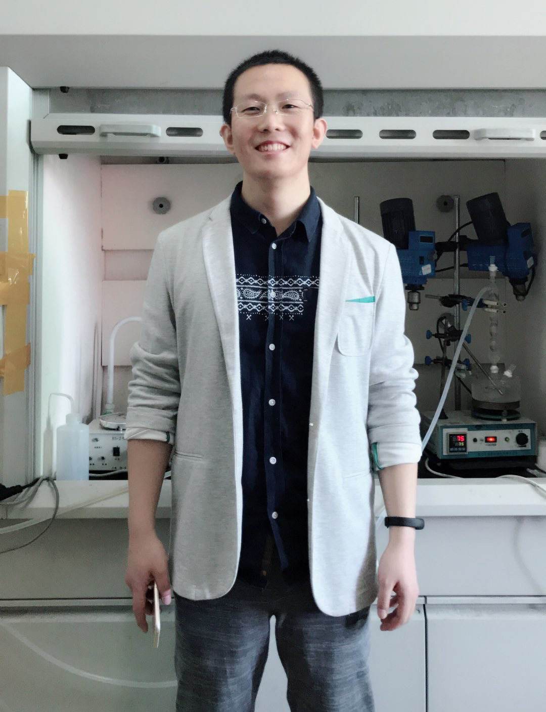

王新栋，中山大学孙逸仙纪念医院，副研究员。
中山大学“百人计划”引进人才，主要从事生物传感和治疗的基础及转化研究。
官网主页：https://www.gzsys.org.cn/doctor/27848
教育和工作经历：哈尔滨工业大学和加州大学伯克利分校联合培养的工学博士；清华大学的企业博士后，期间担任植入式和可穿戴医疗的项目经理。同时具有科学研究和技术转化双重背景。
部分成果：
（1）近三年获批8项国家、省部、市校级的纵向项目，总经费>270万元；主持两项重点横向项目，总金额为600万元。
（2）作为第一和通讯作者在Advanced Materials、Chemical Society Reviews、ACS Nano等国际知名期刊发表sci论文十余篇，并在相关国际和国内会议上作受邀报告。
（3）申请或授权专利十余项，相关成果在中国深圳创新创业大赛和“春晖杯”中国留学人员创新创业大赛上获得奖项。
个人邮箱: xdwang_chem@126.com、wangxd96@mail.sysu.edu.cn